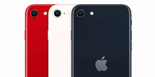

Apple Is Gearing Up To Introduce The iPhone SE 4th Generation, All You Need To Know

Febuary 13th 2025
iPhone SE 4 Release: What We Can Expect
Apple is set to unveil the iPhone SE 4 on February 19, 2025, marking a significant update to its budget-friendly iPhone lineup. This model is expected to feature a 6.1-inch OLED Super Retina XDR display, aligning with the design of the iPhone 14. The device will also introduce Face ID, replacing the traditional Home button, and include a USB-C port for charging and data transfer.
Under the hood, the iPhone SE 4 is anticipated to be powered by Apple's A18 chip, the same processor expected in the iPhone 16 and iPhone 16 Plus, coupled with 8 GB of RAM. The camera system will feature a 48MP rear sensor and a 24MP front-facing camera, enhancing the overall photography experience. These upgrades will make the iPhone SE 4 a strong contender in the mid-range smartphone market, delivering improved performance and better camera capabilities.
Pricing is expected to start below $700, maintaining the iPhone SE's reputation for offering high-end features at a more affordable price point. This strategic pricing aligns with Apple's approach to cater to a broader audience without compromising on quality and innovation.
The iPhone SE 4’s release is highly anticipated, as it combines modern design elements with advanced technology. It is an attractive option for consumers who seek a balance between performance and affordability, making it one of the most awaited smartphones of the year.
For more details, check out these sources:
¿IPhone SE 4 a la vista? Apple confirma que presentará nuevos productos la semana que vieneEverything we think we know about the next iPhone SE
Tim Cook teases a new Apple launch next week, and it's probably the iPhone SE